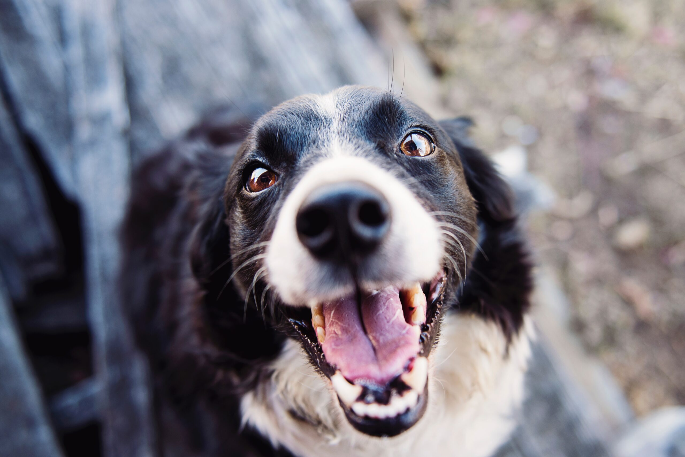

Cada animal en nuestra protectora tiene una historia y está esperando una segunda oportunidad. Al adoptar, no solo le das un hogar a quien más lo necesita, también ganas un amigo fiel para toda la vida.
En nuestra protectora cada granito de arena cuenta. Aceptamos cualquier tipo de donación ya sea económica, camitas, mantas, juguetes, comida y todo lo que ayude a mejorar la vida de nuestros peludos rescatados.
¿Tienes un poco de tiempo y mucho amor por los animales? Únete como voluntario a nuestra protectora. Necesitamos manos para pasear, alimentar, limpiar, jugar, y sobre todo, dar cariño a quienes mas lo necesitan.